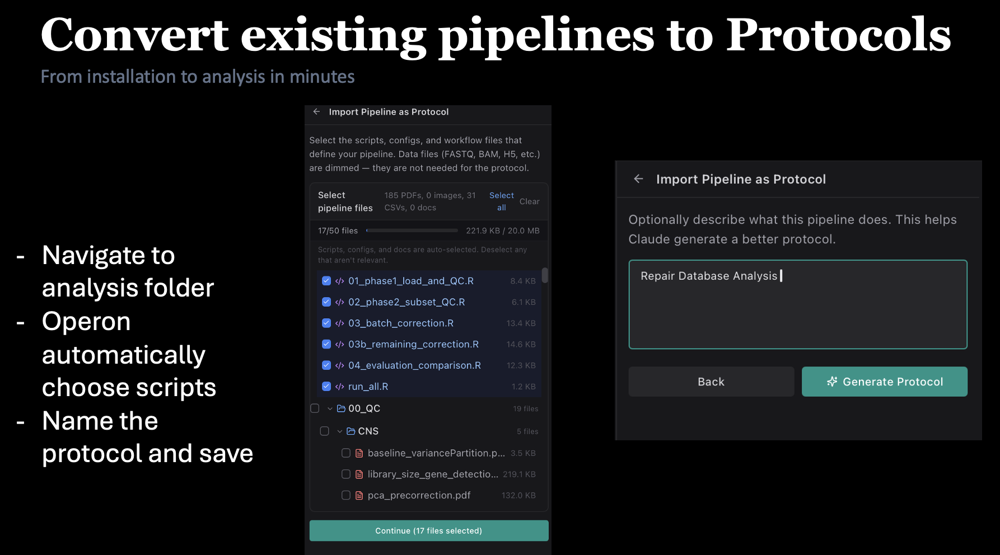

Bioinformatics, re-imagined
The IDE that runs
The IDE that runs
your experiments.
Operon pairs Claude with your lab's HPC, 180+ analysis protocols, an MCP research catalog, and a private-LLM stack — so the only thing you write is the question.
v0.5.9 · released this month
macOS · Windows · Linux
MIT · open-source
180+ protocols
12+ MCPs
40+ LLM backends
★
v0.5.9


